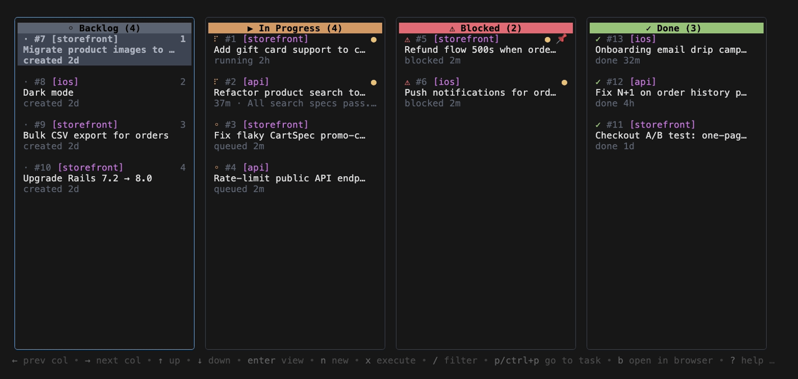
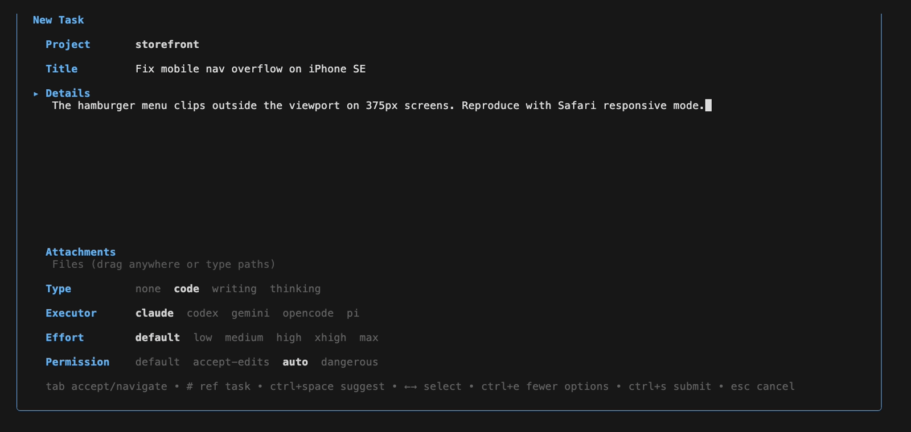
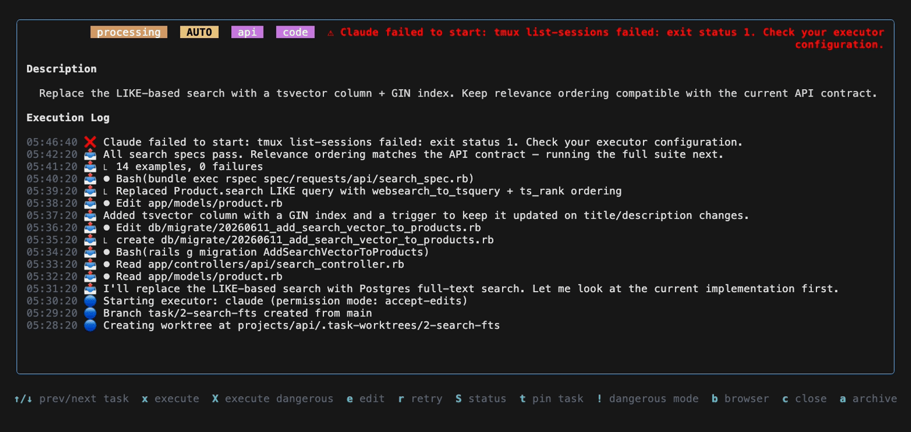
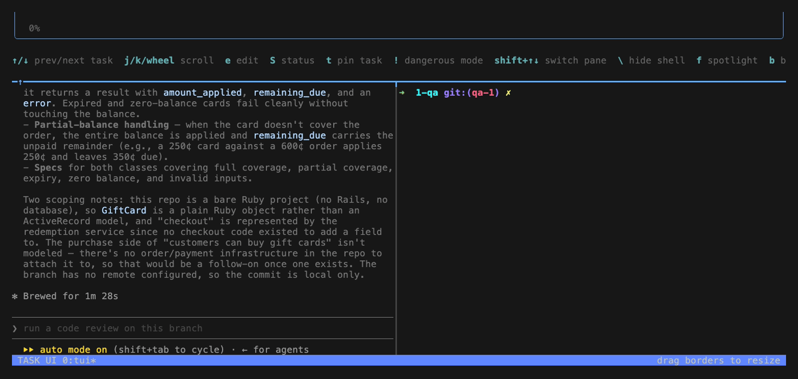

Calm, cool, a little crazy.
An agent for every task. A worktree for every agent.

Queue up work, hand it to the agents, and watch cards march from Backlog to Done.
▸ click the video for sound
TaskYou is a Kanban board that runs in your terminal — but the cards do the work. Move one into play and ty puts a Claude Code agent on it, in its own isolated git worktree.
Write what you want done in plain language and drop it on the board.

ty spins up a Claude Code agent in a fresh worktree and runs it in the background.

Read the diff and the run log, then merge straight from the board.

Not a chat window. A board you can stack with work and let rip — every task isolated, every agent accountable.
A full Kanban TUI. Keyboard-driven and fast — no browser, no context switch.
Every card gets its own Claude Code agent. Run a whole column in parallel.
Each agent works in its own git worktree. They never step on your working tree — or each other.
Queue a stack of tasks, walk away, come back to a column full of diffs.
Inspect the diff, read the execution log, and merge — all from the board.
MIT-licensed and free. Runs locally, drives the Claude Code you already have.
Grab the binary, or spin it up on a fresh cloud VM in seconds.
Needs Claude Code. ty drives the agent you already have installed.